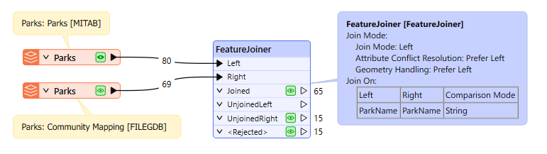
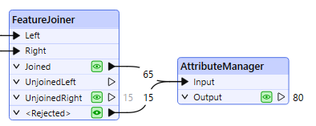

After completing this lesson, you’ll be able to:
The Parks & Recreation department has asked Fatima to build a workspace to bring together two park datasets into one. Currently, she has one dataset with park information and another with park addresses. These datasets share a common ParkName attribute. She wants to join them so all the park information is in one table.
She will use the FeatureJoiner to join two streams of features.

This example uses spatial data, but the procedure is the same regardless of whether the data is spatial. Remember, if you have the data to be joined in a database, consider using the DatabaseJoiner or SQLCreator/SQLExecutor instead.
Fatima opens her starting workspace (C:\FMEData\Workspaces\TransformAttributes\join-tables.fmw) in FME Workbench (2025.0.1 or later).

Initial workspace reading in Parks.tab and the Parks table from CommunityMapping.gdb
This workspace joins a parks MapInfo TAB dataset with a Parks table from a community mapping geodatabase.
She runs the reader feature types to inspect the source data. The Parks geodatabase table contains addresses and a URL for each park that she wants to join to the Parks.tab dataset. She will use ParkName to join the two tables.

Parks MapInfo Tab table [MITAB]

Parks table from CommunityMapping File Geodatabase [FileGDB]
She connects the Parks [MITAB] feature type to the Left input port on the FeatureJoiner and then connects the Parks [FILEGDB] to the Right input port.

Both Park datasets connected to the FeatureJoiner transformer
Then, in the FeatureJoiner parameters, she sets the Join Mode to Left. For the Attribute Conflict Resolution and Geometry Handling parameters, she sets those to Prefer Left (the default).

FeatureJoiner Join Mode Parameter, all set to Left
Next, for Join On, she sets the Left to ParkName and the Right to ParkName, then changes the Comparison Mode to String (it should work with Automatic, but it's better to be explicit).

Join On parameter set to ParkName for both Left and Right and the Comparison Mode set to String
Of course, when joining it's preferable to use a UUID of some kind, but the name of the park is the best we can do with this data.
She runs the workspace with Feature Caching Enabled:

65 Joined features, 15 UnjoinedRight features, and 15 <Rejected> features
She has 65 Joined features, 15 Unjoined features from the right table, and 15 Rejected features. She inspects the features that FME rejected. She clicks on the Inspection icon on the Rejected port to inspect the features in Visual Preview.
Looking at these features, Fatima sees they are tiny unnamed parks that were built to create traffic-calming areas. Since they are unnamed, they can’t be joined, but she still wants to keep them even though they were rejected; the Parks & Recreation department wants them in the final dataset.
Fatima adds an AttributeManager to the canvas and connects it to both the Joined and Rejected output ports on the FeatureJoiner. The only purpose of adding the AttributeManager is to show that both the joined and rejected features will continue through the rest of the workspace.
She reruns the workspace with Feature Caching Enabled and inspects the AttributeManager output data. There are 80 features, and when she inspects the data, the named and unnamed parks are included in the table.

AttributeManager connected to the Joined and <Rejected> output ports on the FeatureJoiner

The Joined and <Rejected> features shown in the Data Inspector.